Work / Nitro Underground
Nitro Underground
A 3D street-racing game for Windows PC, developed on an Android phone until version 0.26: overtaking through traffic, nitro, drifts, jumps, and police that show up when you cause too much damage. Name, world and circuits are original.
- Role
- Concept, game design, product direction and every play-test
- Built with
- Godot 4.7, GDScript, Jolt physics, Vulkan; Windows only since 22 November (OpenGL ES on Android before that)
- Timeline
- 27 October to 22 November 2026: v0.1 to v0.26 in 16 days, then the move to PC with v0.27
- Status
- Playable prototype, v0.27
- Code
- About 7,500 lines of GDScript, written by Claude under my direction
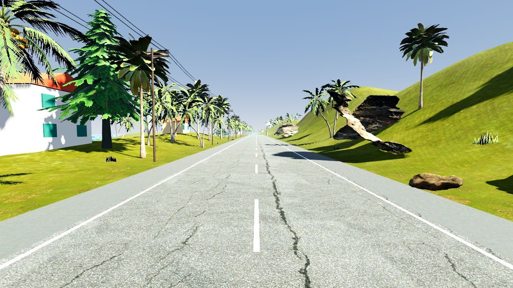
Why it exists
I wanted to find out how far one person can take a real game when the code is written by an AI and every product decision is made by a human who tests on his own phone.
The answer, after 16 days: a racing game with a garage, a car dealer, tuning, money and reputation, four circuits, three AI rivals, traffic you can crash into and a police chase system. Each version went onto my Android phone or PC, I played it, wrote down what felt wrong, and that list became the brief for the next version.
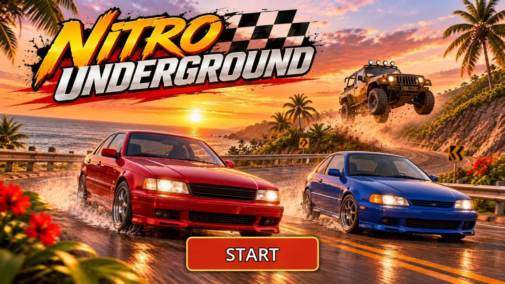
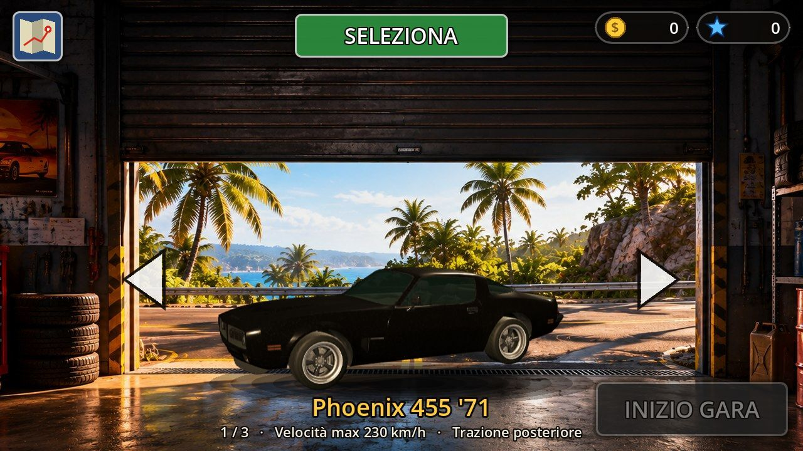
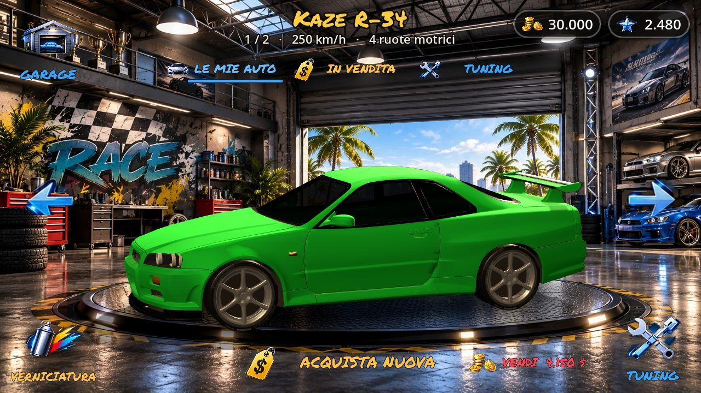
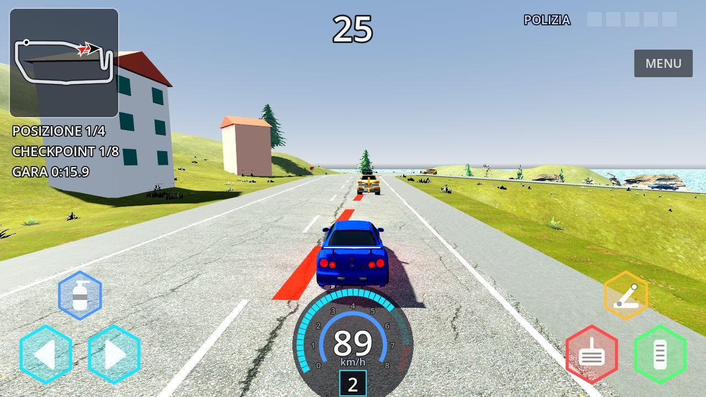
Physics, measured
The car is a rigid body on four wheels simulated by hand, not Godot's ready-made vehicle node, so every behaviour can be tuned. Wheels are cylinders cast towards the ground, so they ride up a kerb instead of hitting it. Each wheel has its own spring and damper, and grip limited by the load on that wheel: brake hard and the weight moves forward, exactly as in a real car.
Feel was never judged by eye alone. An automated test bench drives a reference car and prints the results as JSON, and runs at three different physics rates to prove that a slow phone and a fast PC drive the same.
| Physics ticks per second | 0–100 km/h | Braking from 144 km/h | Top speed | Jump from a 25° ramp |
|---|---|---|---|---|
| 30 | 3.60 s | 33.4 m | 212.7 km/h | 33.9 m |
| 60 | 3.55 s | 33.4 m | 212.6 km/h | 33.5 m |
| 120 | 3.52 s | 33.3 m | 212.8 km/h | 33.8 m |
Results from version 0.22. Until then jumps landed within 2.0–2.5% of the theoretical ballistic path, but play-testing told a different story: the brake barely worked in corners, the handbrake spun the car, and cars flew for metres after a crash. So I asked for heavier cars (1,800 kg instead of 1,200, with engine, brakes and springs scaled to match), an arcade brake assist and extra gravity while climbing. The bench confirmed it: braking from 144 km/h went from 62.9 m to 33.4 m, a handbrake drift now peaks at 38° instead of spinning out at 84°, and jumps are about 25% shorter, on purpose.
Circuits anyone can write
I wanted more varied circuits, and I wanted to draw them myself without programming. So the game reads a tiny language in Italian that reads like satnav directions, one piece of road per line:
# ROUTE 66 - map of the "Desert" circuit
PARTENZA
DRITTO 520 # the long Route 66 straight
DESTRA 60 220 # very fast sweeper
SALITA 4
ESSE SINISTRA 45 70 # into the canyon
TORNANTE DESTRA 24 # hairpin at the bottom of the canyonThe game closes the loop by itself, adjusting curves and straights so the finish meets the start, then builds the road, the terrain, the racing line and the speed the AI should carry through each corner. Checkpoint times come from the same racing line: each section allows its ideal time × 1.55 + 4 seconds.
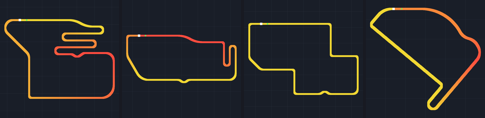
Built for a mid-range phone
Version 0.13 froze my phone, a Samsung A51. Instead of cutting features I treated it as an engineering problem:
- Switched the phone build from Vulkan to OpenGL ES, which ran smoothly where Vulkan stuttered.
- Merged each car's 3D parts to cut draw calls: one sports car went from 8,270 draw calls to 148.
- Compressed textures with mipmaps: memory in a race went from 418 MB to 104 MB.
- Pre-baked lighter car models with a build tool, and drew distant cars as simpler versions.
- Dropped the comic-book shader style I had built in v0.9–v0.12 and went back to realistic graphics, because it cost too much on the phone.
- Gave the phone its own graphics profile in v0.22: 3D drawn at 62% resolution, no glow, one shadow map, half the scenery and 12 traffic cars instead of 24. In the same camera shots, triangles fell by 25–39% and draw calls by 21–32%.
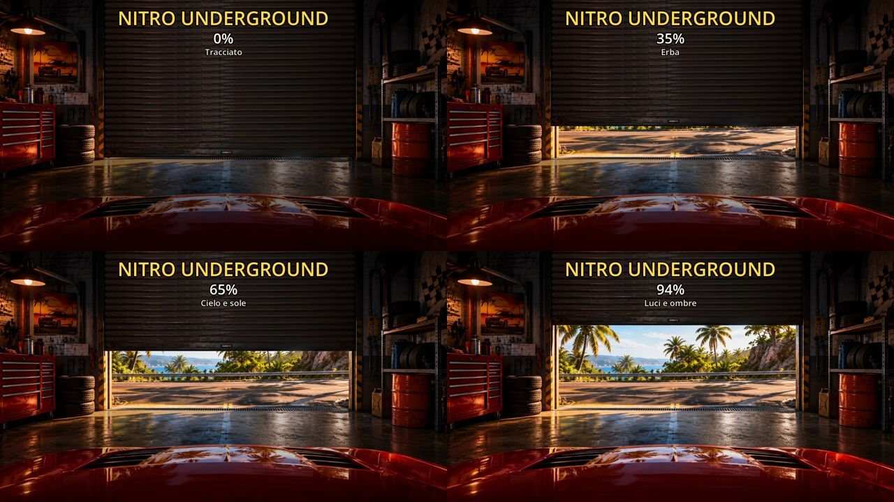
One world, streamed in tiles
The long-term plan is a single large world with four zones instead of four separate circuits. The world is built outside the game, by the terrain and road generators of Universal Game Tools, and saved as ready-made files: the game opens them without containing any of the tools' code. Version 0.23 was the first race on such a world, a small island with a road, two villages and trees.
Then I asked for an island at least five times larger, and before filling it with content I wanted to know whether the phone could cope. The terrain is cut into 80 tiles of 320 m, each with a detailed version, a light one for the distance and its collision; the game loads them in the background around the camera, 25 on the phone and 49 on the PC. On my Galaxy A51 I measured 37–42 FPS, with 200–230 thousand triangles against 910 thousand on the small island.
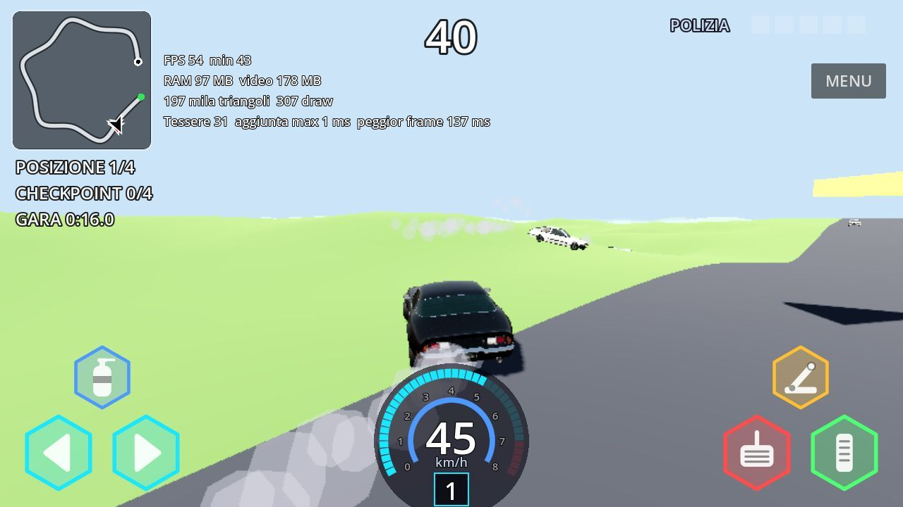
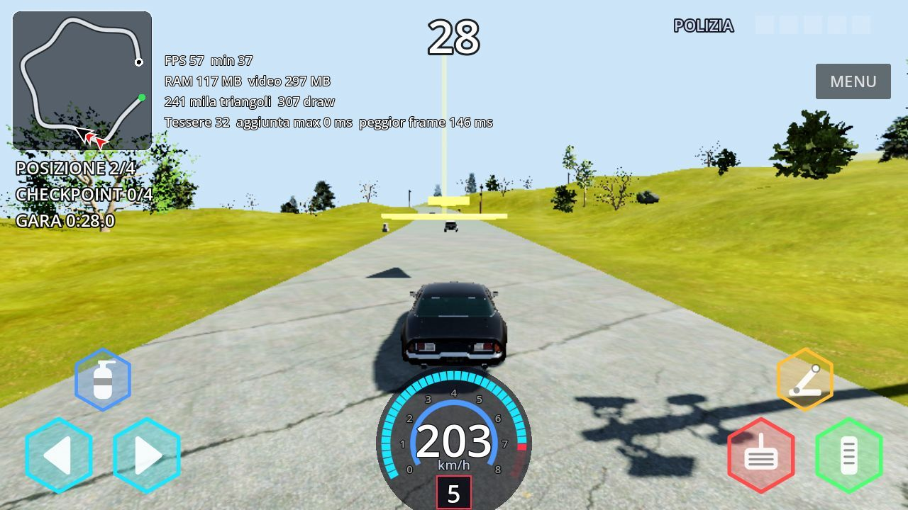
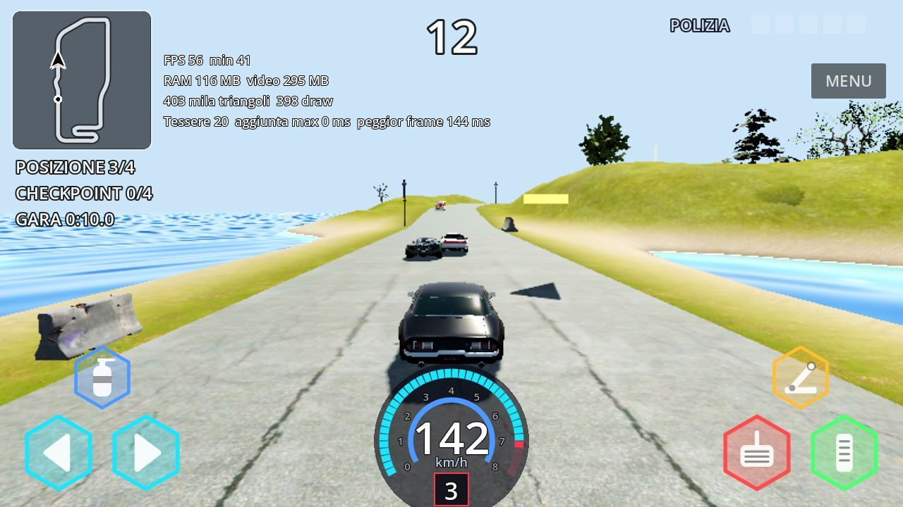
Version 0.25 dressed the island with the same terrain shader as the hand-made circuits, the sea from the coast circuit and up to six lighter versions of every model, which the engine swaps by distance. Version 0.26 is the first complete zone: the Coast circuit, read from its own text map, placed on the west shore as a closed loop and joined to the rest of the road network. They were the last versions built for the phone.
From phone to PC
On 22 November I decided the game would be for Windows PC only: the phone had become too limiting for the project. The Android export, the workflow that published test APKs and the phone-only project settings were removed; a Windows Desktop preset takes their place, and the race now pauses when the window loses focus. The light graphics profile built for the phone stays, switched on only by hand.
Version 0.27 followed the same day. The touch buttons are gone: you drive with WASD, handbrake on Space and nitro on left Shift, read by physical key position so the layout holds on any keyboard. The up and down arrows switch between four camera views (standard, close, bonnet and cockpit), placed by measuring the player's car model so the eye lands in the right spot on every car; left and right look about 80° to the side and return when released. The game starts full screen.
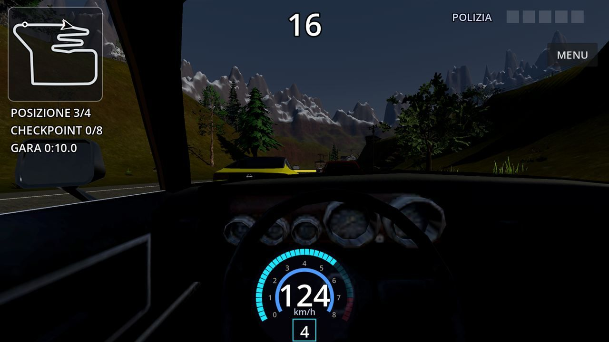
A full race with the autopilot at 1920×1080 finished first in 1:58.6 with no errors, and the first Windows executable completed the same automated race. My own keyboard test is next.
Licences, tracked one by one
Every third-party asset (cars, buildings, trees, textures, sounds) is free and registered with author, link, licence and the changes we made: more than 120 entries. In version 0.15 I removed every car whose licence did not allow commercial use, renamed the rest with invented names and removed the real brands' logos, so the game could one day be sold.
The repository follows the same discipline: model libraries the game does not use are kept out of it, and the register records where every removed pack came from.
How it changed
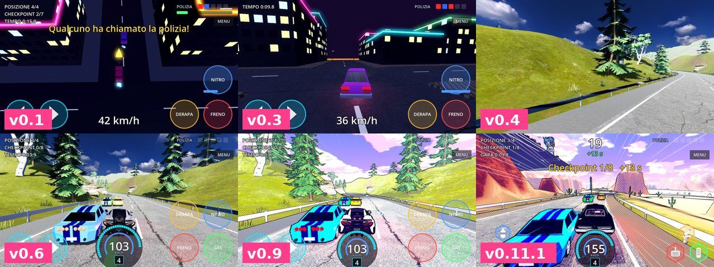
| v0.1 | First playable prototype on the phone: night city seen from above |
|---|---|
| v0.2–v0.3 | Rigid-body physics, camera behind the car, jumps |
| v0.4–v0.6 | Mountain by day, garage, steering from the wheels, dashboard |
| v0.7–v0.9 | Audio, traffic you can hit, hexagon controls, comic-book style |
| v0.10–v0.12 | Route 66 menu, circuits as text maps, desert, pause, fairer police |
| v0.13–v0.16 | The phone froze: lighter cars and textures, OpenGL, only commercially licensed cars |
| v0.17–v0.18 | Start in the garage, minimap, shutter loading screen, money and reputation |
| v0.19–v0.20.4 | Car dealer with paint, six upgrades and a 3D showroom floor |
| v0.21 | Fuller environments: 51 new models of woods, rocks, houses and street furniture |
| v0.22–v0.22.2 | A graphics profile for the phone, heavier cars, real brakes, a stronger nitro, new icons for garage and dealer |
| v0.23–v0.24 | First race on a generated world, then an island five times larger, loaded in tiles while you drive |
| v0.25–v0.26 | The large island gets textures, sea, villages and trees; the Coast circuit becomes its first zone |
| v0.27 | Windows only: Android build removed, keyboard controls, four camera views, full screen, first Windows executable |
The development diary (in Italian) records, version by version, what I asked for and how it was built. The technical document covers architecture, AI rivals, audio and performance in depth.